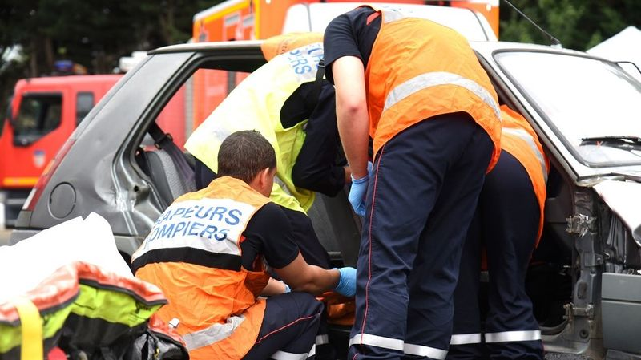
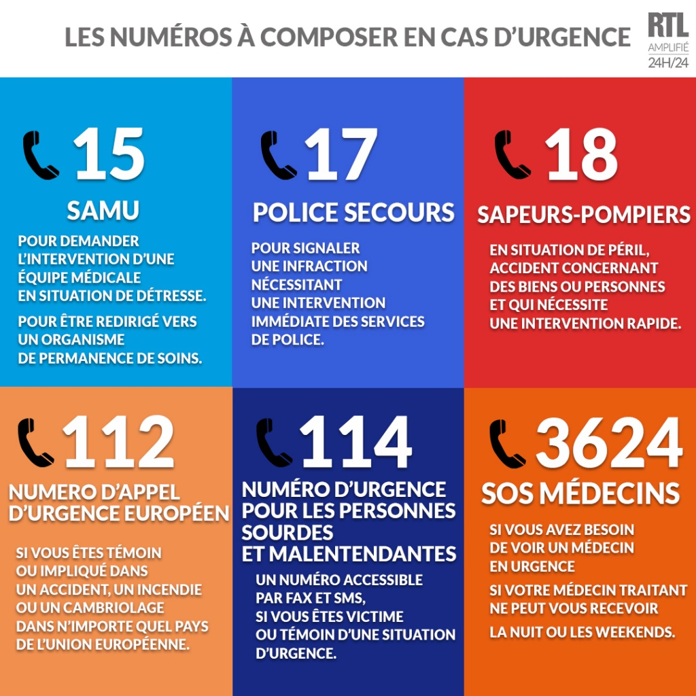
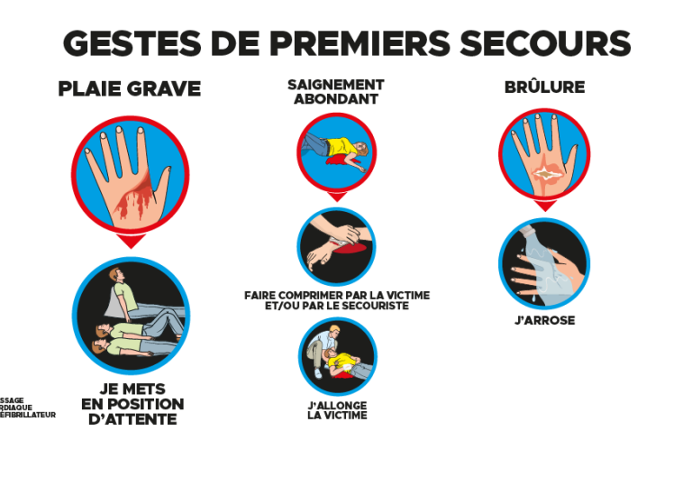

Depuis le 2 mai 2016, l'épreuve du code de la route (ETG) a fait peau neuve. L'aide aux victimes d'accident fait partie intégrante des nouvelles thématiques qui ont été ajoutées à l’apprentissage du Code de la route. Le nouveau Code de la route distingue 4 étapes à destination du conducteur dans le processus d'aide apportée aux victimes : la protection de la zone, l'évaluation de l'état des victimes, l'alerte des secours et enfin le secours des victimes. Connaître chacune de ces étapes permet de mieux comprendre les gestes à adopter face à ces différentes situations.
Protéger la zone accidentée
Il existe deux types de situations différentes lors de l’arrivée d’un usager sur la zone d'un accident :
- Si les secours sont déjà sur place, l'automobiliste doit éviter de s’arrêter et doit continuer sa route. En effet, il vaut mieux éviter de gêner les secours dans leur intervention ou même de gêner les autres usagers de la route qui empruntent cet axe routier. De plus, contourner la zone permet d'éviter tout risque de sur-accident.
- Si l'accident vient de se produire, il est absolument nécessaire de s’arrêter et porter secours aux victimes.
Pour protéger la zone d'un accident de la circulation, la procédure que doivent suivre les automobilistes est la suivante :
- Il faut se garer après le lieu de l'accident afin de ne créer aucune gêne pour l'arrivée des secours ou la circulation d'autres usagers de la route. Il ne faut pas oublier d’allumer les feux de détresse en marche.
- Il est essentiel de porter le gilet de haute visibilité de jour comme de nuit afin d'être bien vu et ainsi éviter tout risque d'accident supplémentaire.
- Il faut placer des triangles de présignalisation en amont et en aval de l'accident. Ces triangles doivent se situer à au moins 30 mètres du ou des véhicules accidentés.
- Il faut mettre en sécurité les personnes qui sont déjà descendues de leur véhicule en les plaçant derrière la glissière de sécurité.
Évaluer l'état des victimes
Lors de cette phase, le conducteur doit être extrêmement vigilant puisque les informations qui seront ensuite fournies aux secours devront être les plus précises possibles. Il en va de la vie des personnes accidentées.
Pour évaluer l'état de chacune des victimes, il est fondamental de :
- vérifier si la victime est consciente ou non
- vérifier si la victime est en capacité de respirer
- regarder si des traces de saignement sont visibles
- si la victime répond, essayer de comprendre ce qu'elle ressent et ce qui la fait souffrir

Alerter ou faire alerter les secours
Suite à un accident, il est nécessaire d’alerter les secours le plus rapidement possible. Plusieurs solutions sont envisageables :
- Il est possible d’utiliser un téléphone portable. Même si ce dernier est verrouillé, il est toujours possible d'appeler les numéros d'urgence.
- En cas d’accident sur une autoroute, il est possible d’utiliser une borne d'appel d'urgence, ce qui permettra au secours de localiser directement le lieu de l’accident. Des bornes sont situées tous les 2 km le long de la voie, et sont donc facilement accessibles.
Il convient ensuite de fournir un maximum d'informations aux secours afin qu'ils puissent prévoir les moyens humains et techniques nécessaires à l'intervention. Pour alerter de la manière la plus efficace possible, l’usager qui prévient les secours doit indiquer :
- son nom et son numéro de téléphone.
- la nature de l'accident ainsi que les autres risques potentiels (en cas de risque d'incendie ou d'explosion par exemple).
- l'heure de l'accident
- le lieu exact de l'accident (numéro de route, sens de direction, rue, point kilométrique,...)
- le nombre et le type de véhicules impliqués
- le nombre de blessés ainsi que la gravité de leurs blessures
Il existe plusieurs numéros à contacter en cas d'accident : le 18 qui est le numéro des sapeurs pompiers, le 15 qui est le numéro du SAMU et enfin le 112 qui est le numéro d'appel européen des services de secours. En cas d’appel depuis un téléphone portable, il vaut mieux composer le 112 de préférence, car le correspondant sera mis en relation avec les services d’urgence du département concerné.
Secourir les blessés
Ce qu’il est possible de faire pour secourir les blessés :
- il faut s’assurer que la personne accidentée puisse respirer et que les voies respiratoires soient dégagées
- il faut également rassurer la victime en lui parlant. Il faut également éviter de parler de ses blessures, pour ne pas la faire paniquer
- il est possible de couvrir la victime à l'aide d'une couverture de survie isothermique quelle que soit la température extérieure (une victime en état de choc a toujours froid)
- si la victime saigne abondamment, il ne faut pas hésiter à compresser la plaie afin de stopper l'hémorragie. Pour cela, il convient d’utiliser une serviette ou un tissu propre
Ce qu’il ne faut pas faire :
- il ne faut jamais tenter de déplacer une victime, sauf s’il y a un risque imminent de noyade ou d'incendie. Déplacer une victime risquerait d'aggraver une blessure déjà existante
- il ne faut jamais donner à boire à une victime même si cette dernière le réclame. En effet, certaines opérations doivent avoir lieu à jeun, il faut rester vigilant.
- Enfin, si un motard est également impliqué dans l'accident, il ne faut jamais lui retirer son casque. Il faut également le dissuader de le faire lui-même. Si des vertèbres sont touchées, il existe un risque important d’aggravation des séquelles.
Il existe de nombreux stages de premiers secours dans toutes les villes de France vous permettant d'apprendre les bons gestes techniques à utiliser. On les appelle les stages PSC1, et ils sont ouverts à tous les usagers de la route.

Moyen mnémotechnique pour se souvenir de la marche à suivre
En cas d'accident de la route, les usagers doivent donc intervenir rapidement afin d'éviter tout risque de suraccident. Il leur faut néanmoins intervenir dans un ordre précis : le PAS.
- P pour "protéger" : il faut d'abord protéger la zone de l'accident, notamment grâce au triangle de haute visibilité et en éloignant si possible les victimes du lieu de l'accident
- A pour "alerter" : l'usager doit prévenir ensuite les secours afin de leur permettre d'intervenir dans les plus brefs délais
- S pour "secourir" : l'usager doit secourir les victimes de l'accident en les rassurant et en intervenant en cas d'hémorragie, etc.